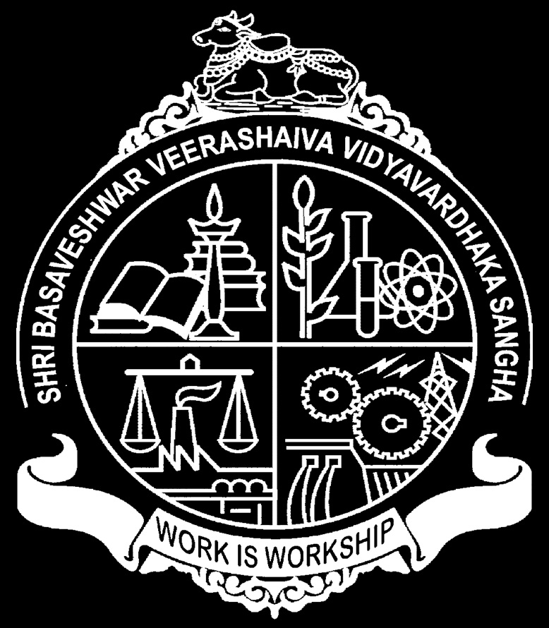

The Grievance Redressal Cell (GRC) is setup to address the issues of students concerning their grievances. Students may register their grievance by filling the online form and they may also contact the members of the cell and express their grievances. The students are also encouraged to make constructive suggestions by using the suggestion box. The college assures the students that once a complaint is made, it will be treated with sensitivity and as confidential.
Sl. No.
Commitee Members
Designation
Mobile No
E-Mail
1
Ambiger Mam
CS HOD
9448646912
renukaran@gmail.com
2
Blah
Blah
Blah
Blah
3
Blah
Blah
Blah
Blah
4
Blah
Blah
Blah
Blah
About B.V.V.S. Polytechnic(Autonomous)

We are, who we are.
B.V.V.S. Polytechnic was established in 1958 under Grant-in-Aid code with three engineering branches. Presently the polytechnic offers eight Engineering diploma Courses and One Non-Engineering diploma Course. Since 1999, the institution is an academically autonomous institute. Five courses were accredited by AICTE-NBA, New Delhi in 2007.
B.V.V.S. Polytechnic (Autonomous), is a premier technical institution situated at Bagalkot providing quality based formal and non formal education in technical, non-technical and professional fields to meet the need of the society. B.V.V.S. Polytechnic is committed.
Provide effective instruction and training that is globally competitive by our qualified staff who are willing for continuous development of the institution with the support of the adequate infrastructure and efficient administration.
Strive for up-liftment of rural community, socially and economically weaker sections and unemployed youth with special emphasis on WOMEN.
Develop better Industry-Institute Interaction and environment to make the products acceptable to industry / Society / Community.
Initiate income generating projects in various departments.
Mould the students in Leadership, Entrepreneurship, Personality Development, Innovativeness and as good citizens of Nation.